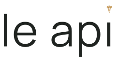
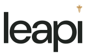
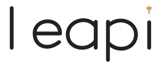
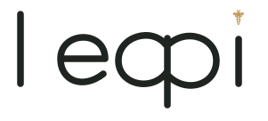
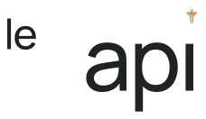
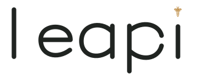
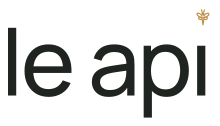

Текущий оригинал
Действующий знак — ориентир для сравнения.
LE API / РАУНД 2
Десять вариантов: текущий оригинал, понравившийся №02 без изменений и восемь новых решений в его направлении.
Действующий знак — ориентир для сравнения.
Понравившийся вариант сохранён без изменений.
Короткое leapi без пробела: единый силуэт и более собранная форма.

Более свободный шаг букв и спокойный вес; легче смотрится на светлом фоне.

Компактное написание и мягкие контуры DM Sans; более плотный акцент.

Авторская одноэтажная a, круглые просветы и одинаковый ритм штрихов.

a и p соединены общим штрихом — собственная лигатура названия.

Небольшое le и более крупное api: контраст двух масштабов в одном знаке.

Открытые окончания e и p, больше просветов и более графичная пластика.

Спокойный гротеск варианта02 с более простым знаком пчелы для малого размера.